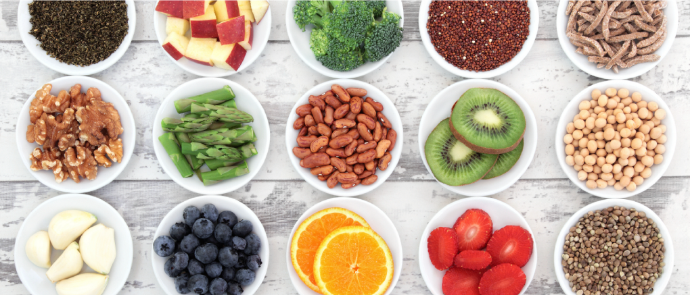
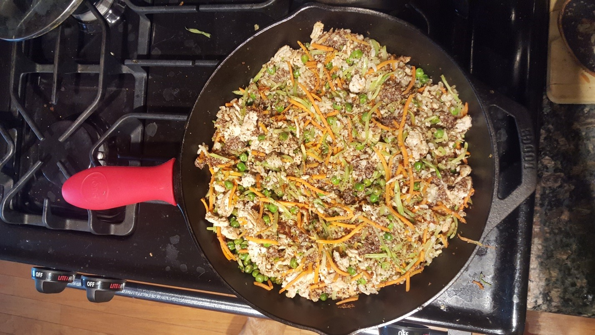
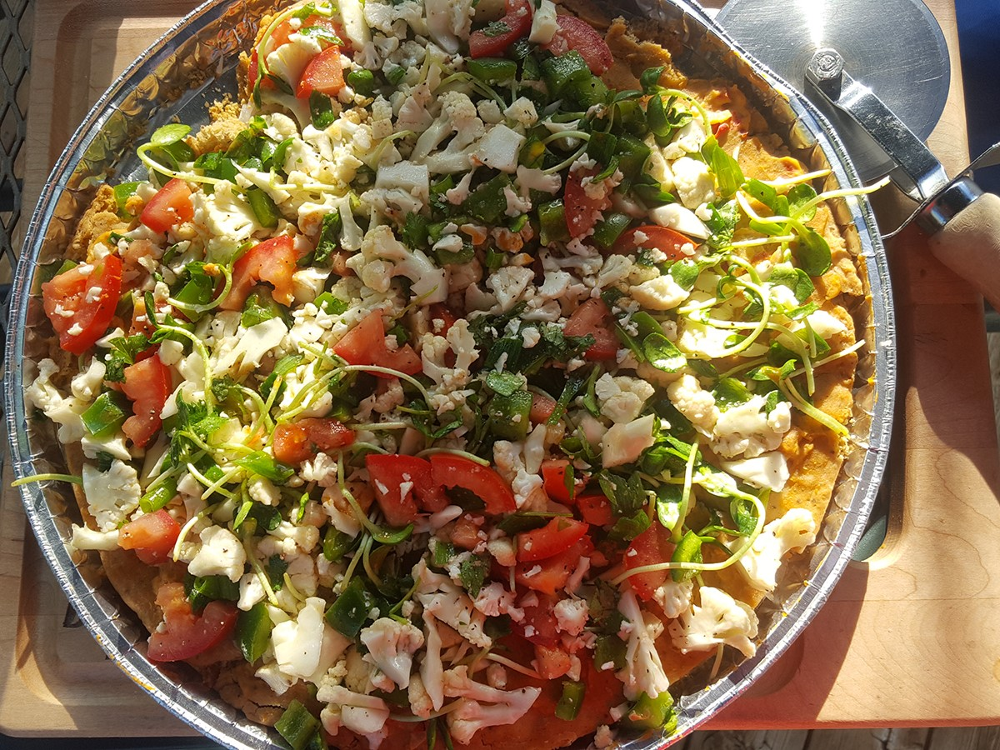
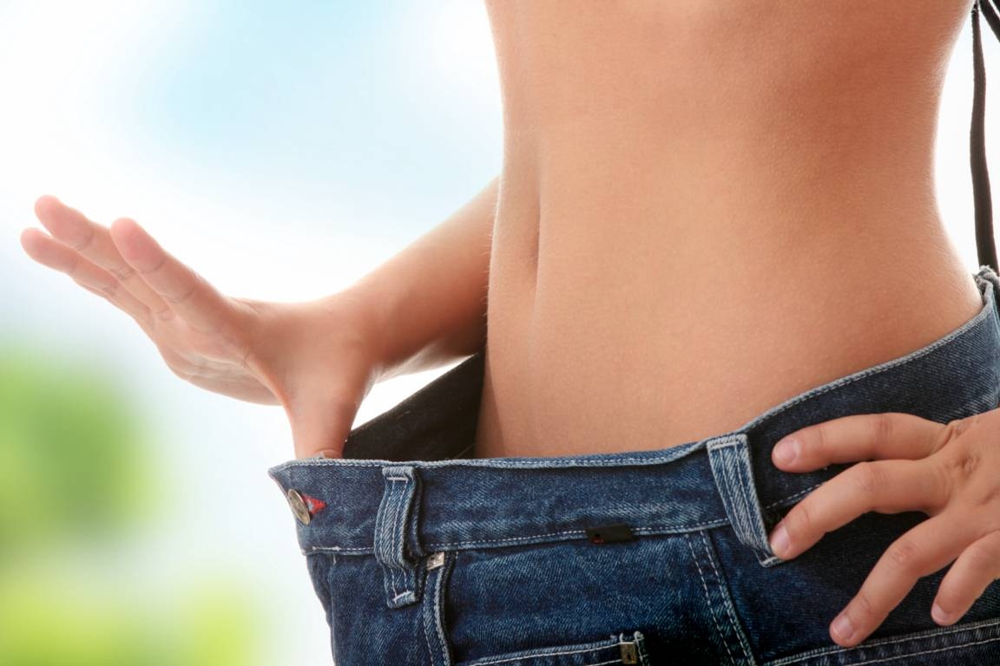
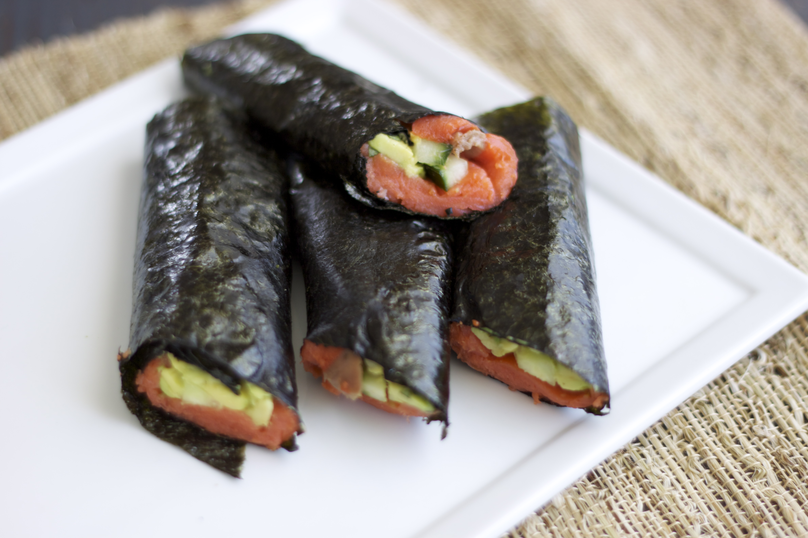
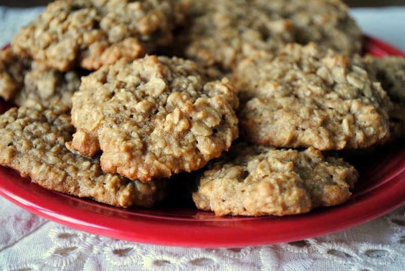
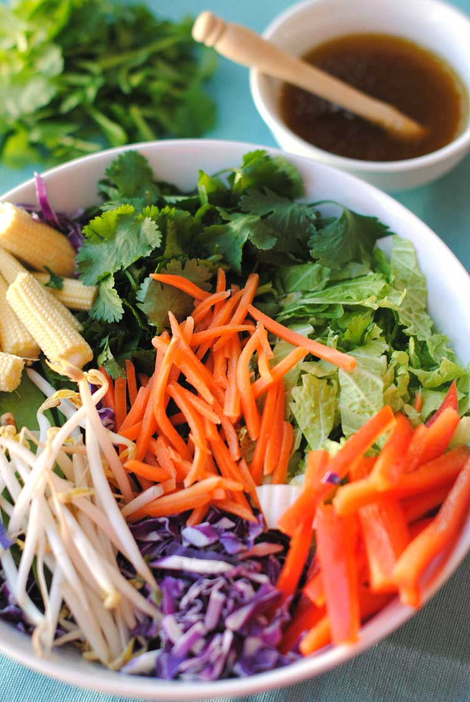

Breakfast is the most important meal of the day so you should make the most of what you eat when you first wake up. Aim to have your first meal within an hour of waking up. A great way to ensure you get the most out of your breakfast is to have a meal that is packed with protein and superfoods to give you tons of energy for the day.
continue reading

Learn how to clean up your diet in 5 Ways
continue reading

Eating Healthy When Going Out
continue reading

Learn how to make a Healthy Dog Food Recipe ....
continue reading

Starting your own business as a holistic health coach is vastly different from the typical nine-to- five job. It can be a bit overwhelming at first, but once you settle into a routine it can be one of the most rewarding careers ....
continue reading

Learn how to make a Cauliflower Hummus Pizza ....
continue reading

Learn the most successful tips in achieving natural weight loss ....
continue reading

How to make smoked salmon nori wrap in simple steps ....
continue reading

One of the main questions I get from clients is how to cook and bake healthier. These cookies are a fresh take on that homemade banana bread that my mom baked when I was growing up. They are gluten, dairy free, vegan and best of all ....
continue reading
Intuitive eating is an approach that bridges the connection between the food you eat, and your mind and body. You become your own nutrition expert. It’s one of the best ways to separate physical from emotional feelings and signals and help you foster and build body intuition. It also helps you finally let go of addictions to foods ....
continue reading

Thursday…I got invited to fly down to the Bahamas and spend the weekend learning from some of the most brilliant entrepreneurs, coaches and CEOs. Initially, I had a million reasons why I couldn’t go. Until, I GOT OUT OF MY OWN WAY ....
continue reading
Almost everyone is aware of the dangers of the sun and the risks of skin cancer. We’re given the statistics, and it makes us want to protect ourselves. With the rise of skin cancer and protection from the sun, the use of sunscreen has also risen. It probably hasn’t even occurred to most of us that the very thing we are using to protect ourselves from the sun’s rays may also be harmful ....
continue reading
Happy Earth Day! Although every day should be a day that we are thinking about how our life and actions can improve the wellbeing of our planet, this is a special day dedicated to doing just that! Earth Day is also a perfect opportunity to simply raise awareness for how much our planet needs us to thrive.
Why is it important? Well, much like our bodies, if we don’t take care of our environment, then it can no longer provide for us ....
continue reading

With spring comes new produce that's now in season, and we get inspiration for new recipes to freshen and rejuvenate our diet. It's so lovely! I love this salad recipe because of the light, delicate flavors it brings. Unlike most salad recipes, it also features mostly vegetables, without a ton of unhealthy, processed toppings. One of my favorite ingredients in particular is the yummy cabbage that makes the base of the salad.
Cabbage is a low calorie, high nutrient density food- meaning that you can get more "bang for your buck" in terms of health. It's a good source of Vitamin K (which is essential for proper blood clotting), Vitamin C (which helps you fight sickness), energy-boosting Vitamin B6, and many more vitamins and minerals. It's also known to help decrease the risk of cancer and other illnesses.
This Chinese Chicken Salad recipe is a great way to enjoy the delicate flavor of cabbage, mixed with a yummy ginger dressing and a little protein from fresh grilled chicken. Enjoy!!
-
Ingredients for salad:
- 1 Tbsp olive oil
- 2 thin chicken cutlets
- 2 cups thinly sliced napa cabbage
- 2 cups thinly sliced red cabbage
- 1/4 cup fresh cilantro leaves
- 1/2 cup shredded carrots
- 5 scallions, chopped
- 1/4 cup slivered toasted almonds
-
Ingredients for dressing:
- 5 Tbsp olive oil
- 5 Tbsp olive oil
- 3 Tbsp rice wine vinegar
- 1/2 lemon, juiced
- 1/2 tsp ground ginger
- 1 tsp honey
- pinch of salt and pepper
-
Directions:
- Heat olive oil in a pan and add chicken cutlets. Season with salt and pepper.
- Cook for 3-4 minutes on each side, until chicken is cooked through. Let cool.
- Toss all vegetables in a medium sized bowl until well mixed.
- Thinly slice the chicken cutlets and top salad with them.
- Once salad is assembled, sprinkle with toasted almonds.
- To make dressing, mix all ingredients in a small bowl and blend until well combined. Drizzle over salad and enjoy